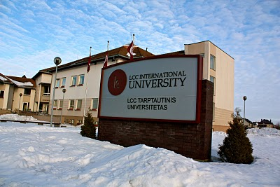

The story about me starts with the point that I am senior student at LCC International University which is located in Klaipeda, Lithuania.
I study as a Business Administration student starting from 2013.
Before studying at LCC I lived in Chisinau, Moldova.
I was born in this wonderful city and lived there until 19 years old.
One of my hobbies is traveling and I can say that I've been to most of the europe
On the picture above you can see all the places in Europe where I've been already.
I also enjoy practicing sports of different kind. One of them is voleyball.
You can see me every Tuesday and Thursday at 20:00 in Michaelsen Center
By the way I also like polar bears